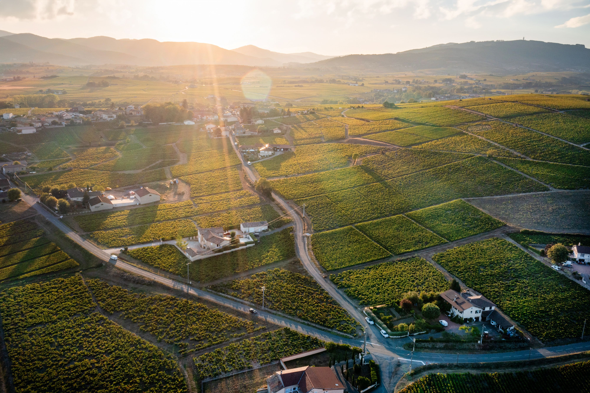

La démarche design
Tout part d'un principe : la rareté crée la valeur. La palette se limite à deux neutres et un or unique, réservé aux accents. Le duo typographique oppose une garalde émotionnelle (Cormorant Garamond) à une linéale discrète (Montserrat).
- Architecture : 5 pages (accueil, domaine, terroir, champagnes, contact) qui suivent le récit naturel d'une visite : l'histoire, la terre, le vin, la rencontre.
- Rythme : grandes respirations, sections en pleine largeur, photos immersives en voile sombre pour la lisibilité.
- Micro-interactions : transitions lentes (.4 à .8s), survols feutrés — le luxe ne se presse pas.


Univers photographique : lumières naturelles, matières vraies.